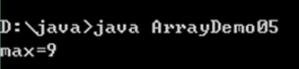

原文连接:https://www.cnblogs.com/liuhui0308/p/11631004.html
1. 流程控制语句（续）
1.1 选择结构switch
switch 条件语句也是一种很常用的选择语句，它和if条件语句不同，它只能针对某个表达式的值作出判断，从而决定程序执行哪一段代码。例如，在程序中使用数字1~7来表示星期一到星期天，如果想根据某个输入的数字来输出对应中文格式的星期值，可以通过下面的一段伪代码来描述：
用于表示星期的数字
如果等于1，则输出星期一
如果等于2，则输出星期二
如果等于3，则输出星期三
如果等于4，则输出星期四
如果等于5，则输出星期五
如果等于6，则输出星期六
如果等于7，则输出星期天对于上面一段伪代码的描述，大家可能会立刻想到用刚学过得if…else if…else语句来实现，但是由于判断条件比较多，实现起来代码过长，不便于阅读。Java中提供了一种switch语句来实现这种需求，在switch语句中使用switch关键字来描述一个表达式，使用case关键字来描述和表达式结果比较的目标值，当表达式的值和某个目标值匹配时，会执行对应case下的语句。具体实现代码如下：
switch(用于表示星期的数字) {
case 1 :
输出星期一;
break;
case 2 :
输出星期二;
break;
case 3 :
输出星期三
break;
case 4 :
输出星期四;
break;
case 5 :
输出星期五;
break;
case 6:
输出星期六;
break;
case 7:
输出星期天;
break;
}上面改写后的伪代码便描述了switch语句的基本语法格式，具体如下：
switch (表达式){
case 目标值1:
执行语句1
break;
case 目标值2:
执行语句2
break;
．．．．．．
case 目标值n:
执行语句n
break;
default:
执行语句n+1
break;
}在上面的格式中，switch语句将表达式的值与每个case中的目标值进行匹配，如果找到了匹配的值，会执行对应case后的语句，如果没找到任何匹配的值，就会执行default后的语句。switch语句中的break关键字将在后面的做具体介绍，此处，我们只需要知道break的作用是跳出switch语句即可。
需要注意的是，在switch语句中的表达式只能是byte、short、char、int类型的值，如果传入其它类型的值，程序会报错。但上述说法并不严谨，实际上在JDK5.0中引入的新特性enum枚举也可以作为switch语句表达式的值，在JDK7.0中也引入了新特性，switch语句可以接收一个String类型的值。
1.2 选择结构switch练习
接下来通过一个案例演示根据数字来输出中文格式的星期，如下所示。SwitchDemo01.java
public class SwitchDemo01 {
public static void main(String[] args) {
int week = 5;
switch (week) {
case 1:
System.out.println("星期一");
break;
case 2:
System.out.println("星期二");
break;
case 3:
System.out.println("星期三");
break;
case 4:
System.out.println("星期四");
break;
case 5:
System.out.println("星期五");
break;
case 6:
System.out.println("星期六");
break;
case 7:
System.out.println("星期天");
break;
default:
System.out.println("输入的数字不正确...");
break;
}
}
}运行结果如图所示。
上述代码中，由于变量week的值为5，整个switch语句判断的结果满足第17行的条件，因此打印“星期五”，例程中的default语句用于处理和前面的case都不匹配的值，将第3行代码替换为int week = 8，再次运行程序，输出结果如下图所示。
在使用switch语句的过程中，如果多个case条件后面的执行语句是一样的，则该执行语句只需书写一次即可，这是一种简写的方式。例如，要判断一周中的某一天是否为工作日，同样使用数字1~7来表示星期一到星期天，当输入的数字为1、2、3、4、5时就视为工作日，否则就视为休息日。接下来通过一个案例来实现上面描述的情况，如下所示。SwitchDemo02.java
public class SwitchDemo02 {
public static void main(String[] args) {
int week = 2;
switch (week) {
case 1:
case 2:
case 3:
case 4:
case 5:
// 当 week 满足值 1、2、3、4、5 中任意一个时，处理方式相同
System.out.println("今天是工作日");
break;
case 6:
case 7:
// 当 week 满足值 6、7 中任意一个时，处理方式相同
System.out.println("今天是休息日");
break;
}
}
}运行结果如下图所示。
上述代码中，当变量week值为1、2、3、4、5中任意一个值时，处理方式相同，都会打印“今天是工作日”。同理，当变量week值为6、7中任意一个值时，打印“今天是休息日”。
2. 数组
在生活中，我们可能会碰到如下的场景。
现在需要统计某公司员工的工资情况，例如计算平均工资、最高工资等。假设该公司有50名员工，用前面所学的知识完成，那么程序首先需要声明50个变量来分别记住每位员工的工资，这样做会显得很麻烦。
其实在Java中，我们可以使用一个数组来记住这50名员工的工资。数组是指一组数据的集合，数组中的每个数据被称作元素。在数组中可以存放任意类型的元素，但同一个数组里存放的元素类型必须一致。
2.1 数组的定义
在Java中，可以使用以下格式来定义一个数组。如下
数据类型[] 数组名 = new 数据类型[元素个数或数组长度];
int[] x = new int[100];上述语句就相当于在内存中定义了100个int类型的变量，第一个变量的名称为x[0]，第二个变量的名称为x[1]，以此类推，第100个变量的名称为x[99]，这些变量的初始值都是0。为了更好地理解数组的这种定义方式，可以将上面的一句代码分成两句来写，具体如下：
int[] x; // 声明一个int[]类型的变量
x = new int[100]; // 创建一个长度为100的数组接下来，通过两张内存图来详细地说明数组在创建过程中内存的分配情况。
第一行代码 int[] x; 声明了一个变量x，该变量的类型为int[]，即一个int类型的数组。变量x会占用一块内存单元，它没有被分配初始值。内存中的状态如下图所示。
流程控制语句（switch）、数组3.png)
第二行代码 x = new int[100]; 创建了一个数组，将数组的地址赋值给变量x。在程序运行期间可以使用变量x来引用数组，这时内存中的状态会发生变化，如下图所示。
在上图中描述了变量x引用数组的情况。该数组中有100个元素，初始值都为0。数组中的每个元素都有一个索引(也可称为角标)，要想访问数组中的元素可以通过“x[0]、x[1]、……、x[98]、x[99]”的形式。需要注意的是，数组中最小的索引是0，最大的索引是“数组的长度-1”。在Java中，为了方便我们获得数组的长度，提供了一个length属性，在程序中可以通过“数组名.length”的方式来获得数组的长度，即元素的个数。
接下来，通过一个案例来演示如何定义数组以及访问数组中的元素，如下所示。ArrayDemo01.java
public class ArrayDemo01 {
public static void main(String[] args) {
int[] arr; // 声明变量
arr = new int[3]; // 创建数组对象
System.out.println("arr[0]=" + arr[0]); // 访问数组中的第一个元素
System.out.println("arr[1]=" + arr[1]); // 访问数组中的第二个元素
System.out.println("arr[2]=" + arr[2]); // 访问数组中的第三个元素
System.out.println("数组的长度是：" + arr.length); // 打印数组长度
}
}运行结果如下图所示。
在上述代码中声明了一个int[]类型变量arr，并将数组在内存中的地址赋值给它。在5~7行代码中通过角标来访问数组中的元素，在第8行代码中通过length属性访问数组中元素的个数。从打印结果可以看出，数组中的三个元素初始值都为0，这是因为当数组被成功创建后，数组中元素会被自动赋予一个默认值，根据元素类型的不同，默认初始化的值也是不一样的。具体如下表所示。
| 数据类型 | 默认初始化值 |
| byte、short、int、long | 0 |
| float、double | 0.0 |
| char | 一个空字符（空格），即’\u0000’ |
| boolean | false |
| 引用数据类型 | null，表示变量不引用任何对象 |
如果在使用数组时，不想使用这些默认初始值，也可以显式地为这些元素赋值。接下来通过一个程序来学习如何为数组的元素赋值，如下所示。ArrayDemo02.java
public class ArrayDemo02 {
public static void main(String[] args) {
int[] arr = new int[4]; // 定义可以存储4个整数的数组
arr[0] = 1; // 为第1个元素赋值1
arr[1] = 2; // 为第2个元素赋值2
// 下面的代码是打印数组中每个元素的值
System.out.println("arr[0]=" + arr[0]);
System.out.println("arr[1]=" + arr[1]);
System.out.println("arr[2]=" + arr[2]);
System.out.println("arr[3]=" + arr[3]);
}
} 运行结果如下图所示。
在上述代码中，第3行代码定义了一个数组，此时数组中每个元素都为默认初始值0。第2、3行代码通过赋值语句将数组中的元素arr[0]和arr[1]分别赋值为1和2，而元素arr[2]和arr[3]没有赋值，其值仍为0，因此打印结果中四个元素的值依次为1、2、0、0。
在定义数组时只指定数组的长度，由系统自动为元素赋初值的方式称作动态初始化。
在初始化数组时还有一种方式叫做静态初始化，就是在定义数组的同时就为数组的每个元素赋值。数组的静态初始化有两种方式，具体格式如下：
1、类型[] 数组名 = new 类型[]{元素，元素，……};
2、类型[] 数组名 = {元素，元素，元素，……};
上面的两种方式都可以实现数组的静态初始化，但是为了简便，建议采用第二种方式。接下来通过一段代码来演示数组静态初始化的效果，如下所示。ArrayDemo03.java
public class ArrayDemo03 {
public static void main(String[] args) {
int[] arr = { 1, 2, 3, 4 }; // 静态初始化
// 下面的代码是依次访问数组中的元素
System.out.println("arr[0] = " + arr[0]);
System.out.println("arr[1] = " + arr[1]);
System.out.println("arr[2] = " + arr[2]);
System.out.println("arr[3] = " + arr[3]);
}
}运行结果如下图所示。
上述代码中采用静态初始化的方式为数组每个元素赋予初值，分别是1、2、3、4。需要注意的是，第3行代码千万不可写成int[] arr = new int[4]{1,2,3,4};，这样写编译器会报错。原因在于编译器会认为数组限定的元素个数[4]与实际存储的元素{1,2,3,4}个数有可能不一致，存在一定的安全隐患。
2.2 数组的遍历
在操作数组时，经常需要依次访问数组中的每个元素，这种操作称作数组的遍历。接下来通过一个案例来学习如何使用for循环来遍历数组，如下所示。ArrayDemo04.java
public class ArrayDemo04 {
public static void main(String[] args) {
int[] arr = { 1, 2, 3, 4, 5 }; // 定义数组
// 使用for循环遍历数组的元素
for (int i = 0; i < arr.length; i++) {
System.out.println(arr[i]); // 通过索引访问元素
}
}
}运行结果如下图所示。
上述代码中，定义一个长度为5的数组arr，数组的角标为0~4。由于for循环中定义的变量i的值在循环过程中为0~4，因此可以作为索引，依次去访问数组中的元素，并将元素的值打印出来。
2.3 数组的常见问题
数组在编写程序时应用非常广泛，灵活地使用数组对实际开发很重要。接下来，本节将针对数组的常见操作进行详细地讲解，如数组的遍历、最值的获取、数组的排序等。
2.3.1 数组最值
在操作数组时，经常需要获取数组中元素的最值。接下来通过一个案例来演示如何获取数组中元素的最大值，如下所示。ArrayDemo05.java
public class ArrayDemo05 {
public static void main(String[] args) {
int[] arr = { 4, 1, 6, 3, 9, 8 }; // 定义一个数组
int max = arr[0]; // 定义变量max用于记住最大数，首先假设第一个元素为最大值
// 下面通过一个for循环遍历数组中的元素
for (int x = 1; x < arr.length; x++) {
if (arr[x] > max) { // 比较 arr[x]的值是否大于max
max = arr[x]; // 条件成立，将arr[x]的值赋给max
}
}
System.out.println("max=" + max); // 打印最大值
}
}运行结果如下图所示。

上述代码中，定义了一个临时变量max，用于记住数组的最大值。通过for 循环获取数组中的最大值，赋值给max变量。
首先假设数组中第一个元素arr[0]为最大值，然后使用for循环对数组进行遍历，在遍历的过程中只要遇到比max值还大的元素，就将该元素赋值给max。这样一来，变量max就能够在循环结束时记住数组中的最大值。需要注意的是，在for循环中的变量i是从1开始的，这样写的原因是程序已经假设第一个元素为最大值，for循环中只需要从第二个元素开始比较，从而提高程序的运行效率。
2.3.2 数组异常
2.3.2.1 数组越界异常
每个数组的索引都有一个范围，即0~length-1。在访问数组的元素时，索引不能超出这个范围，否则程序会报错，如下所示。ArrayDemo06.java
public class ArrayDemo06 {
public static void main(String[] args) {
int[] arr = new int[4]; // 定义一个长度为4的数组
System.out.println("arr[0]=" + arr[4]); // 通过角标4访问数组元素
}
}运行结果如下图所示。
上图运行结果中所提示的错误信息是数组越界异常ArrayIndexOutOfBoundsException，出现这个异常的原因是数组的长度为4，其索引范围为0~3，而上述代码中的第4行代码使用索引4来访问元素时超出了数组的索引范围。
所谓异常指程序中出现的错误，它会报告出错的异常类型、出错的行号以及出错的原因，关于异常在后面的章节会有详细地讲解。
2.3.2.2 空指针异常
在使用变量引用一个数组时，变量必须指向一个有效的数组对象，如果该变量的值为null，则意味着没有指向任何数组，此时通过该变量访问数组的元素会出现空指针异常，接下来通过一个案例来演示这种异常，如下所示。ArrayDemo07.java
public class ArrayDemo07 {
public static void main(String[] args) {
int[] arr = new int[3]; // 定义一个长度为3的数组
arr[0] = 5; // 为数组的第一个元素赋值
System.out.println("arr[0]=" + arr[0]); // 访问数组的元素
arr = null; // 将变量arr置为null
System.out.println("arr[0]=" + arr[0]); // 访问数组的元素
}
}运行结果如下图所示。
通过上图所示的运行结果可以看出，上述代码中第4、5行代码都能通过变量arr正常地操作数组。第6行代码将变量置为null，当第7行代码再次访问数组时就出现了空指针异常NullPointerException。
在程序中可以通过一个数组来保存某个班级学生的考试成绩，试想一下，如果要统计一个学校各个班级学生的考试成绩，又该如何实现呢？这时就需要用到多维数组，多维数组可以简单地理解为在数组中嵌套数组。在程序中比较常见的就是二维数组，接下来针对二维数组进行详细地讲解。
2.4.1 二维数组的定义格式
二维数组的定义有很多方式，接下来针对几种常见的方式进行详细地讲解，具体如下：
第一种方式：
int[][] arr = new int[3][4];上面的代码相当于定义了一个3*4的二维数组，即二维数组的长度为3，二维数组中的每个元素又是一个长度为4的数组，接下来通过一个图来表示这种情况，如下图所示。
第二种方式：
int[][] arr = new int[3][];第二种方式和第一种类似，只是数组中每个元素的长度不确定，接下来通过一个图来表示这种情况，如下图所示。
第三种方式：
int[][] arr = {{1,2},{3,4,5,6},{7,8,9}};上面的二维数组中定义了三个元素，这三个元素都是数组，分别为{1,2}、{3,4,5,6}、{7,8,9}，接下来通过一个图来表示这种情况，如下图所示。
对二维数组中元素的访问也是通过角标的方式，如需访问二维数组中第一个元素数组的第二个元素，具体代码如下：
arr[0][1];2.4.2 二维数组元素的访问
操作二维数组时，经常需要获取数组中元素的值。接下来通过一个案例来演示如何获取数组中元素值，如下所示。ArrayDemo08.java
class ArrayDemo08 {
public static void main(String[] args){
//定义二维数组的方式
int[][] arr = new int[3][4];
System.out.println( arr );
System.out.println("二维数组的长度: " + arr.length);
//获取二维数组的3个元素
System.out.println( arr[0] );
System.out.println( arr[1] );
System.out.println( arr[2] );
System.out.println("打印第一个一维数组的元素值");
System.out.println( arr[0][0] );
System.out.println( arr[0][1] );//访问的为二维数组中第1个一维数组的第2个元素
System.out.println( arr[0][2] );
System.out.println( arr[0][3] );
System.out.println("打印第二个一维数组的元素值");
System.out.println( arr[1][0] );
System.out.println( arr[1][1] );
System.out.println( arr[1][2] );
System.out.println( arr[1][3] );
System.out.println("打印第三个一维数组的元素值");
System.out.println( arr[2][0] );
System.out.println( arr[2][1] );
System.out.println( arr[2][2] );
System.out.println( arr[2][3] );
}
}运行结果如下图所示：
2.4.3 二维数组元素遍历与数组元素累加和
学习完了数组元素的访问，我们来学习下数组的遍历及数组的元素累加和操作。
class ArrayDemo09 {
public static void main(String[] args){
//一维数组的求累加和并遍历
int[] arr = {10,20,30,40,50};
int sum = 0;
for (int i=0; i<arr.length; i++) {
//System.out.println(arr[i]);
sum += arr[i];
}
System.out.println("sum= " + sum);
System.out.println("---------------------");
//二维数组的求累加和并遍历
int[][] arr2 = { {1,2},{3,4,5},{6,7,8,9,10} };
int sum2 = 0;
for (int i=0; i<arr2.length; i++) {
for (int j=0; j<arr2[i].length; j++) {
//System.out.println(arr2[i][j])
sum2 += arr2[i][j];
}
}
System.out.println("sum2= "+ sum2);
}
}运行结果如下图所示：
2.4.4 公司销售总和练习
接下来通过一个案例来熟悉二维数组的使用。
例如要统计一个公司三个销售小组中每个小组的总销售额以及整个公司的销售额。如下所示
第一小组销售额为{11, 12}万元
第二小组销售额为{21, 22, 23}万元
第三小组销售额为{31, 32, 33, 34}万元。
ArrayDemo08.java
public class ArrayDemo10 {
public static void main(String[] args) {
int[][] arr = new int[3][]; // 定义一个长度为3的二维数组
arr[0] = new int[] { 11, 12 }; // 为数组的元素赋值
arr[1] = new int[] { 21, 22, 23 };
arr[2] = new int[] { 31, 32, 33, 34 };
int sum = 0; // 定义变量记录总销售额
for (int i = 0; i < arr.length; i++) { // 遍历数组元素
int groupSum = 0; // 定义变量记录小组销售总额
for (int j = 0; j < arr[i].length; j++) { // 遍历小组内每个人的销售额
groupSum = groupSum + arr[i][j];
}
sum = sum + groupSum; // 累加小组销售额
System.out.println("第" + (i + 1) + "小组销售额为：" + groupSum + " 万元");
}
System.out.println("总销售额为: " + sum + " 万元");
}
} 运行结果如下图所示。
在上述代码中，第3行代码定义了一个长度为3的二维数组，并在4~6行代码中为数组的每个元素赋值。例程中还定义了两个变量sum和groupSum，其中sum用来记录公司的总销售额，groupSum用来记录每个销售小组的销售额。当通过嵌套for循环统计销售额时，外层循环对三个销售小组进行遍历，内层循环对每个小组员工的销售额进行遍历，内层循环每循环一次就相当于将一个小组员工的销售总额统计完毕，赋值给groupSum，然后把groupSum的值与sum的值相加赋值给sum。当外层循环结束时，三个销售小组的销售总额groupSum都累加到sum中，即统计出了整个公司的销售总额。